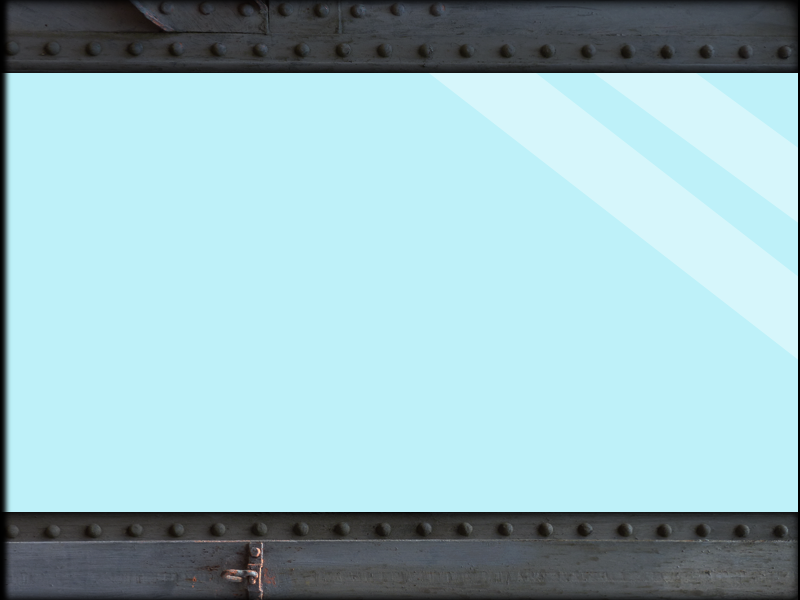
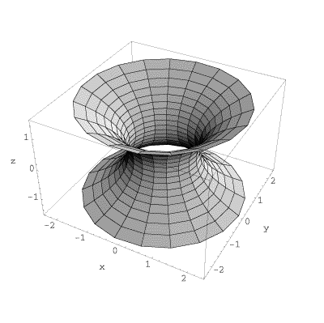
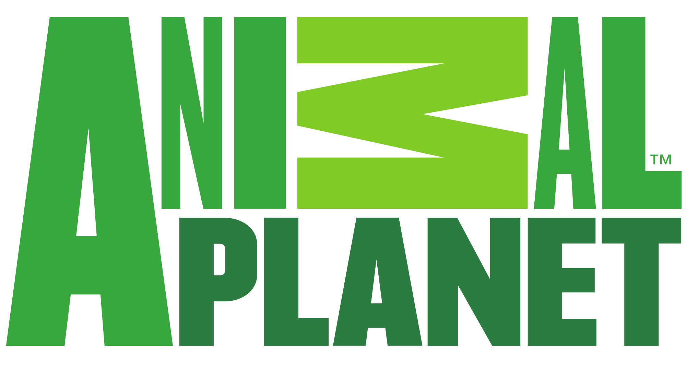
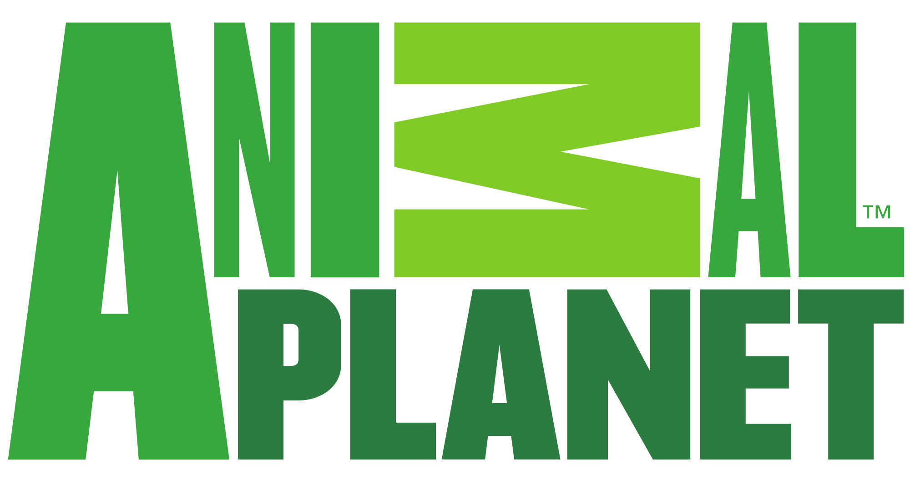

Who we are.
DeepC in a seashell
Power.
DeepC is a powerful compilation of multiple new marine surveillance technologies. DeepC takes these technologies and packages them into a single device; a device both powerful in performance and convenient in use. It is a simple mechanical attachment that fits into the audio jack of your mobile Android© or iOS© device and harnesses the vibration oscillators in the phone to produce a uniquely coupling wave form. This group of waves is aimed into the ocean, from the surface, and travels to the hadal zone at groundbreaking speeds and returns back sonar-echo-locomotive data of fish and sea-andscape in the deep ocean back to your phone. DeepC is the single most effective way to conduct any form of marine research.
Our Roots
Modesty.
DeepC is really awesome but our roots could not be more modest. DeepC was started by Travis Law and Larry Straw, two marine-biology graduate students from the University of Sabaody in Dace, Portugal. Travis and Larry bonded through their shared enthusiasm for the ocean throughout their time in school and grew their bond into a startup, DeepC. Their dedication and love for our world's oceans kept them motivated throughout the project and pushed them to innovate when they ran into slumps. With modest roots DeepC knows how to stay humble even after obtaining success. And after years of hard work DeepC is finally where it needs to be: at the forefront of marine-biology research and discovery. Here on the left is Larry and on the right is Travis.
What we are up to
Growth.
Currently DeepC is located in beautiful Gainesville, Florida. Right now our headquarters in downtown is the proud home of Larry, Travis, and a team of 40 employees. The DeepC team consists of talented designers, brilliant developers, innovative engineers, passionate biologists, amazing business folk, and much,much more. We are a proud family that works together for the single goal of furthering the DeepC agenda which is to grow our company and to grow our understanding of oceans. Currently DeepC is heavily invested in researching technologies to measure the amount of grey found in the skin of dolphins. DeepC hopes to utilize this data to better understand how ocean chlorophyll affects the color of ocean animals.
The Technology to see this.


DeepC utilizes the most powerful technologies to produce the most accurate and clean data imaginable. DeepC is an integrated attachment for your mobile device and interacts with your phone in various ways. The carbon fiber outlining of DeepC's advanced polywire circuit allows for minimal battery use when interacting with your phone. After attaching to your phone DeepC optimizes the onboard vibration system and sets it to a very specific frequency and makes the waves at this frequency available for your use. These waves have a gamma value of 402 which is usually unattainable through other methods. These waves shoot into the ocean and oscillate at record speeds to reach the bottom of the ocean(the hadal zone) and back to you in a reasonable time span. DeepC has tested to report back the data in around 10 minutes in most waters and climates. Additional wait time is possible but shouldn't be expected. The data that DeepC sends back to your mobile device is simply amazing. The waveforms that DeepC release not only travel deep in the ocean but also disperse in every single direction. The vectors span in R3 entirely and nucleosynthesizes with the surrounding environment to produce a complete wireframe mapping fit with sonar-echo-locomotive-data of the ocean within a 3 mile radius. This includes chlorophyll count, fish count, fish shape, geolandscape information, and much much more. To achieve this mapping DeepC integrates every surface along its vectors to produce a differential topological sort of the envrionment.

 

850-555-0104
gding888@gmail.com
7546 Old Thicket Rd., Gainesville, Florida, 33643-2345, U.S.
©Copyright George Ding 2014
This website was made entirely for the purpose of practicing web development. DeepC is not a real brand and I do not claim ownership/the rights to any of the stock images used/modified for the site. This site was made purely out of personal enjoyment and will not be used for any commercial activity. All images and logos belong to their respectful oweners. I do claim ownership of the DeepC logo.